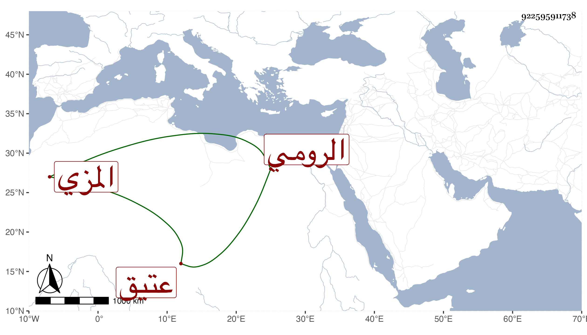

0902Sakhawi.DawLamic.ITO20230111-ara1.EIS1600.922595911738
Biography ID: 922595911738
1129
شاهين الرومي المزي عتيق التقي أبي بكر المزي . قال شيخنا في أنبائه كان عارفا بالتجارة على طريقة سيده في محبة أهل الخير ووصاه على أولاده فرباهم ثم مات بالقولنج في ذي القعدة سنة أربع وثلاثين وهم صغار فأحيط بموجوده فيسر الله القيام في أمرهم مع السلطان حتى استقر الذي لهم في ذمته بل ظهر له أخ شقيق فلما أثبت نسبه قبض ما بقي من تركة أخيه بعد مصالحة ناظر الخاص .
